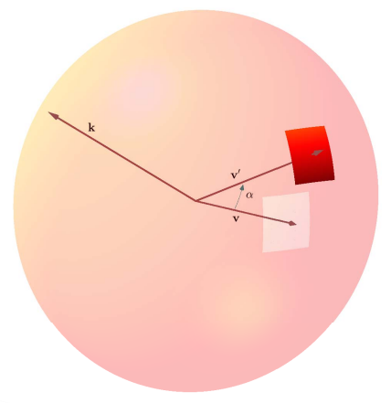

Rotational
Motion Model

The amount of data consumed by spherical 360 video is enormous in comparison to traditional 2D video. This emphasizes the importance of efficient video compression for storage and transmission. However, the prevailing approach is to project the spherical video onto a plane and utilize 2D video coding standards. This approach is significantly sub-optimal due to such standards being designed for regular 2D video.
The projected 360 video is warped into a "fisheye" frame where motion estimation performs very poorly. A simple translation of an object on the sphere can yield a very complex motion on the projected plane. Bharath Vishwanath et al propose to perform motion compensation directly on the sphere before the projection to 2D, and then using Equirectangular Projection (ERP) onto the plane to perform the 2D compression standards as usual.
Prediction Framework
 The block of pixels corresponding to the current video frame on the sphere is the reference frame. The vector v pointing to the center of this block from the radial center of the sphere is the prediction variable. A radial search pattern around the block corresponding to v obtains the possible set of reference locations from the motion vectors in the frame. v is rotated by an angle α to the next frame vector v' corresponding to the predicted block. Bharath Vishwanath et al propose to use Rodrigue's rotation formula to efficiently rotate the vector on the 3D sphere. The rotated spherical coordinates are subsequently mapped to the reference frame. The 3D translation model is then used to perform interpolation in the reference frame to obtain the required prediction.
This method differs from prevalent methods by performing the motion compensation before the ERP projection, as opposed to after. Bharath Vishwanath et al were able to attain a significant overall bitrate reduction of 11% more than the traditionally used High Efficiency Video Encoding (HEVC). This framework also retains the shape and size of objects in the frame after motion, which current approaches such as HEVC struggle with. The preserved shape and bitrate reduction demonstrate the effectiveness of this technique.
Further Reading: Rotational Motion Model for Temporal Prediction in 360 Video Coding